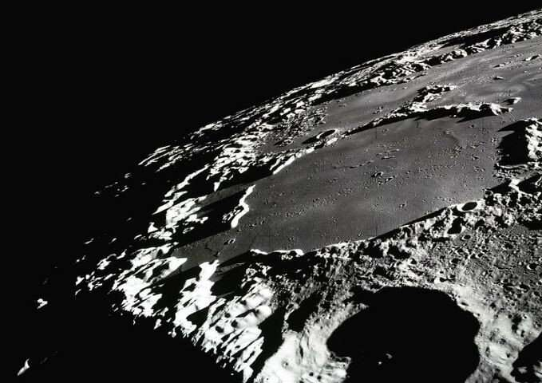

The moon
You fly the spaceship towards the moon and land. As you get out of your spaceship, you see a very strange yet deep crater in the moon that makes you feel uneasy. You almost question it but you realize there is a bright light that appears to be getting closer to you in the distance. You freeze, you don't know what that bright light is but that dark crater is creeping you out.
Where do you go?
